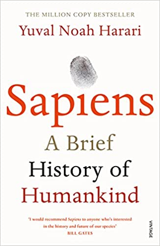
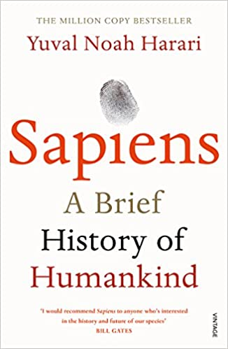

Book recomendations:
Anna Karenina
Acclaimed by many as the world's greatest novel, Anna Karenina provides a vast panorama of contemporary life in Russia and of humanity in general. In it Tolstoy uses his intense imaginative insight to create some of the most memorable characters in all of literature. Anna is a sophisticated woman who abandons her empty existence as the wife of Karenin and turns to Count Vronsky to fulfil her passionate nature - with tragic consequences. Levin is a reflection of Tolstoy himself, often expressing the author's own views and convictions. Throughout, Tolstoy points no moral, merely inviting us not to judge but to watch. As Rosemary Edmonds comments, 'He leaves the shifting patterns of the kaleidoscope to bring home the meaning of the brooding words following the title, 'Vengeance is mine, and I will repay
The Little Prince
A pilot stranded in the desert awakes one morning to see, standing before him, the most extraordinary little fellow. "Please," asks the stranger, "draw me a sheep." And the pilot realizes that when life's events are too difficult to understand, there is no choice but to succumb to their mysteries. He pulls out pencil and paper... And thus begins this wise and enchanting fable that, in teaching the secret of what is really important in life, has changed forever the world for its readers. Few stories are as widely read and as universally cherished by children and adults alike as The Little Prince, presented here in a stunning new translation with carefully restored artwork. The definitive edition of a worldwide classic, it will capture the hearts of readers of all ages.
The power of Habit
In The Power of Habit, award-winning New York Times business reporter Charles Duhigg takes us to the thrilling edge of scientific discoveries that explain why habits exist and how they can be changed. With penetrating intelligence and an ability to distill vast amounts of information into engrossing narratives, Duhigg brings to life a whole new understanding of human nature and its potential for transformation. At its core, The Power of Habit contains an exhilarating argument: The key to exercising regularly, losing weight, raising exceptional children, becoming more productive, building revolutionary companies and social movements, and achieving success is understanding how habits work.
Sapiens: A Brief History of Humankind
100,000 years ago, at least six human species inhabited the earth. Today there is just one. Us. Homo sapiens. How did our species succeed in the battle for dominance? Why did our foraging ancestors come together to create cities and kingdoms? How did we come to believe in gods, nations and human rights; to trust money, books and laws; and to be enslaved by bureaucracy, timetables and consumerism? And what will our world be like in the millennia to come? In Sapiens, Dr Yuval Noah Harari spans the whole of human history, from the very first humans to walk the earth to the radical – and sometimes devastating – breakthroughs of the Cognitive, Agricultural and Scientific Revolutions.
Crime and Punishment
Raskolnikov, a destitute and desperate former student, wanders through the slums of St Petersburg and commits a random murder without remorse or regret. He imagines himself to be a great man, a Napoleon: acting for a higher purpose beyond conventional moral law. But as he embarks on a dangerous game of cat and mouse with a suspicious police investigator, Raskolnikov is pursued by the growing voice of his conscience and finds the noose of his own guilt tightening around his neck. Only Sonya, a downtrodden sex worker, can offer the chance of redemption